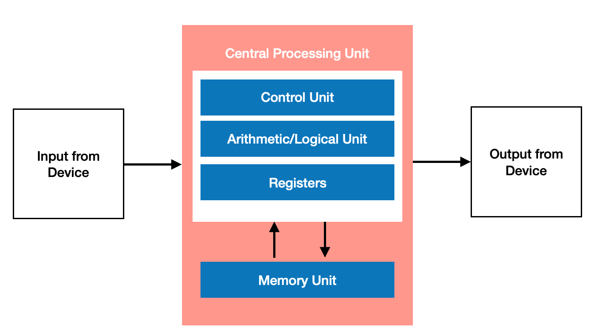
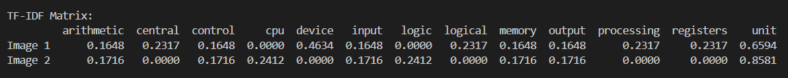

The aim of this Virtual Lab is to demonstrate the process of extracting text from two images using OCR and comparing their content using Natural Language Processing techniques to determine their textual similarity
Aim
Theory & Applications
This experiment demonstrates the integration of Optical Character Recognition (OCR) and
Natural Language Processing (NLP) techniques to compute the textual similarity between
two images. The process involves extracting text from image files, preprocessing the text,
converting it into a weighted vector representation using TF-IDF, and finally measuring
their similarity using Cosine Similarity.
- Optical Character Recognition (OCR)
- Definition: OCR is a computer vision technique used to identify and extract alphanumeric text from images using pattern recognition, convolutional models, or deep learning techniques.
- Functionality: It converts pixel-level image data into text by recognizing character shapes and structures.
- In this project: OCR is performed using the OCR.space API, which provides high-accuracy text extraction, including support for some handwritten content. While open-source libraries like Tesseract and EasyOCR can also be used for this task, they are primarily optimized for printed or clearly structured text and often underperform on real-world handwritten images. OCR.space gives better results due to its training on diverse datasets.
- Natural Language Processing (NLP)
- Definition: NLP refers to the set of algorithms and processes that allow machines to understand, interpret, and manipulate human language.
- Text Preprocessing: A crucial stage that prepares raw text for similarity analysis.
It includes:
- Lowercasing: Converts all characters to lowercase to standardize the text.
- Handling Punctuation & Special Characters: Stripped to avoid irrelevant variation between texts.
- Tokenization: The process of breaking text into smaller units called tokens (typically words). For example, "Text similarity project" → ["text", "similarity", "project"]
- Stopword Removal: Removes common words (like “is”, “the”, “of”) that carry little semantic weight and don't contribute significantly to similarity measures.
- Lemmatization: Reduces each word to its base or dictionary form, which ensures that related terms (e.g., "jumps", "jumping", "jumped") are treated as the same core concept. This improves semantic matching
- TF-IDF (Term Frequency – Inverse Document Frequency)
- Purpose: Converts textual data into numerical feature vectors that reflect term importance in a document relative to a collection.
- Term Frequency (TF): Measures how frequently a term appears in a document:
TF(t) = (Number of times term t appears in a document) / (Total terms in document) - Inverse Document Frequency (IDF): Reduces the weight of common terms by:
IDF(t) = log(Total number of documents / Number of documents with term t) - TF-IDF Score:
TF-IDF(t) = TF(t) × IDF(t) - This representation allows us to model documents as vectors in a high-dimensional space where each dimension corresponds to a term’s weight.
- Cosine Similarity
- Definition: Cosine similarity is a metric used to measure how similar two vectors are, regardless of their magnitude.
- Mathematical Formula:
Cosine Similarity = (A · B) / (||A|| × ||B||)
where A and B are the TF-IDF vectors of two documents. - Interpretation: The result ranges from 0% to 100%:
- 1 → identical direction → highly similar
- 0 → orthogonal → completely dissimilar
- Text-Based Image Comparison for Academic Integrity: Educational platforms can use this system to compare scanned handwritten or printed assignments to detect content overlap using cosine similarity on preprocessed TF-IDF vectors — useful for plagiarism detection where traditional text matching tools fail.
- Duplicate Document Detection in Digital Archives: In large archives of scanned documents (legal files, forms, contracts), this technique can identify duplicate or near-duplicate text content across differently formatted or handwritten copies by comparing their TF-IDF representations.
- Automated Metadata Tagging for Scanned Content: When indexing a large number of scanned pages, NLP can be used to extract and summarize dominant terms using TF-IDF weights. These terms can be used to automatically generate tags or categories.
- Evidence Matching in Digital Forensics: Investigators can analyze and compare handwritten notes or printed letters using OCR and cosine similarity to find textual overlaps, especially when content is disguised or reformatted.
- Document Clustering and Organization: By generating TF-IDF vectors from scanned images, documents can be grouped into clusters (e.g., job applications, receipts, letters) based on textual similarity without manual sorting.
Procedure
- Upload Input Images
- Select two image files that contain textual content (e.g., typed documents, printed forms, or handwritten notes).
- The interface provides two separate upload fields for Image 1 and Image 2.
- Perform OCR on Uploaded Images
- Click the "Extract Text" button.
- Each image is sent to the OCR.space API.
- The API returns the extracted text for both images separately.
- The extracted text is displayed on the screen for verification.
- Preprocess the Extracted Text
- Click the "Preprocess Text" button.
- The following preprocessing steps are applied to each extracted text:
- Lowercasing
- Removing punctuation and special characters
- Tokenization (splitting text into words)
- Stopword removal (removing common words like "the", "and", "is")
- Lemmatization (reducing each word to its base or dictionary form, e.g., "running" → "run")
- The cleaned and tokenized text is then shown on the interface.
- Vectorize the Text using TF-IDF
- The preprocessed texts from both images are converted into TF-IDF vectors.
- Each term is assigned a numerical weight based on its importance in the document and rarity across documents.
- Calculate Cosine Similarity
- Click the "Calculate Similarity" button.
- Cosine Similarity is calculated using the TF-IDF vectors:
Cosine Similarity = (A · B) / (||A|| × ||B||) - A similarity score between 0 and 1 is computed and displayed.
- The score indicates how similar the two images are based on their text content.
- Interpret the Result
- A higher similarity score (close to 100%) means the two texts are very similar or identical.
- A lower score (close to 0%) means the texts are largely different.
- Students can upload different images to explore and analyze how text content affects similarity.
Code
Example programs
// C++ Code Example
from flask import Flask, request, jsonify, render_template
from flask_cors import CORS
import requests
import os
import re
import nltk
import string
from nltk.corpus import stopwords
from nltk.tokenize import word_tokenize
from sklearn.feature_extraction.text import TfidfVectorizer
from sklearn.metrics.pairwise import cosine_similarity
from dotenv import load_dotenv
load_dotenv()
OCR_API_KEY = os.getenv("OCR_API_KEY")
app = Flask(__name__)
CORS(app)
UPLOAD_FOLDER = 'uploads'
app.config['UPLOAD_FOLDER'] = UPLOAD_FOLDER
if not os.path.exists(UPLOAD_FOLDER):
os.makedirs(UPLOAD_FOLDER)
# Function to call the OCR.space API
def ocr_space_file(filename):
payload = {
'isOverlayRequired': False,
'apikey': OCR_API_KEY,
'language': 'eng',
'OCREngine': 2
}
with open(filename, 'rb') as f:
response = requests.post('https://api.ocr.space/parse/image',
files={filename: f},
data=payload)
return response.json()
@app.route('/')
def index():
return render_template('index.html')
# Download NLTK resources
nltk.download('punkt')
nltk.download('stopwords')
stopwords_english = set(stopwords.words('english'))
additional_punctuation = set(string.punctuation)
# Clean unwanted characters from the OCR extracted text
def clean_extracted_text(text):
cleaned_text = re.sub(r'[→V]', '', text)
return cleaned_text.strip()
# Preprocess text: lowercase, remove stopwords & punctuation
def preprocess_text(text):
# Lowercase and clean text
text = text.lower()
text = clean_extracted_text(text)
tokens = word_tokenize(text)
# Remove stopwords and punctuation
processed_tokens = [token for token in tokens if token not in stopwords_english and token not in additional_punctuation]
# Join tokens back into a string
processed_text = " ".join(processed_tokens)
return processed_text
# Compare two texts using TF-IDF and cosine similarity
def compare_tfidf_cosine(text1, text2):
# Preprocess the texts
processed_text1 = preprocess_text(text1)
processed_text2 = preprocess_text(text2)
print(processed_text1, "\n")
print(processed_text2, "\n")
# Vectorize texts with TF-IDF
vectorizer = TfidfVectorizer()
tfidf_matrix = vectorizer.fit_transform([processed_text1, processed_text2])
# Compute cosine similarity (returns a 2x2 matrix)
cosine_sim_matrix = cosine_similarity(tfidf_matrix)
print(cosine_sim_matrix, "\n")
similarity = cosine_sim_matrix[0][1] * 100 # convert to percentage
print("Similarity : ", similarity)
return round(similarity, 2)
@app.route("/api/upload/", methods=["POST"])
def upload_files():
if "image1" not in request.files or "image2" not in request.files:
return jsonify({"error": "Both images are required"}), 400
image1 = request.files["image1"]
image2 = request.files["image2"]
image1_path = os.path.join(app.config['UPLOAD_FOLDER'], "image1.png")
image2_path = os.path.join(app.config['UPLOAD_FOLDER'], "image2.png")
image1.save(image1_path)
image2.save(image2_path)
result1 = ocr_space_file(image1_path)
result2 = ocr_space_file(image2_path)
print("OCR Result 1:", result1)
print("OCR Result 2:", result2)
text1 = result1.get("ParsedResults", [{}])[0].get("ParsedText", "")
text2 = result2.get("ParsedResults", [{}])[0].get("ParsedText", "")
if not text1 or not text2:
return jsonify({"error": "Failed to extract text from images"}), 500
similarity_score = compare_tfidf_cosine(text1, text2)
print("Similarity Score:", similarity_score)
return jsonify({"similarity_score": similarity_score})
if __name__ == "__main__":
app.run(debug=True)
This example demonstrates the full pipeline of the experiment using two sample images. Each stage illustrates how the content is transformed from raw image data to a final similarity score.
The user is required to upload two images which are to be compared on the basis of the text contained in them.
Now consider the following two images are uploaded by the user:


After clicking the “Extract Text” button, each image is sent to the OCR.space API.
The API processes the image and returns the detected text.
Text Extracted
Image 1: Input from\nDevice\nCentral Processing Unit\nControl Unit\nArithmetic/Logical Unit\nRegisters\nMemory Unit\nOutput from\nDevice
Image 2:Input Unit\nCPU\nControl Unit\nArithmetic\n& Logic Unit\nMemory Unit\nOutput Unit
Before comparing the extracted texts, preprocessing is essential to clean and standardize the content. This step ensures that insignificant variations (like punctuation or casing) do not affect the similarity result.
After Lowercasing
Image 1: input from\ndevice\ncentral processing unit\ncontrol unit\narithmetic/logical unit\nregisters\nmemory unit\noutput from\ndevice
Image 2: input unit\ncpu\ncontrol unit\narithmetic\n& logic unit\nmemory unit\noutput unit
After Punctuation Removal
Image 1: input from\ndevice\ncentral processing unit\ncontrol unit\narithmetic logical unit\nregisters\nmemory unit\noutput from\ndevice
Image 2: input unit\ncpu\ncontrol unit\narithmetic\nlogic unit\nmemory unit\noutput unit
After Tokenization
Image 1: ['input', 'from', 'device', 'central', 'processing', 'unit', 'control', 'unit', 'arithmetic', 'logical', 'unit', 'registers', 'memory', 'unit', 'output', 'from', 'device']
Image 2: ['input', 'unit', 'cpu', 'control', 'unit', 'arithmetic', 'logic', 'unit', 'memory', 'unit', 'output', 'unit']
After Stopword Removal
Image 1: input device central processing unit control unit arithmetic logical unit registers memory unit output device
Image 2: input unit cpu control unit arithmetic logic unit memory unit output unit
After Lemmatization
Image 1: input device central process unit control unit arithmetic logical unit register memory unit output device
Image 2: input unit cpu control unit arithmetic logic unit memory unit output unit
The cleaned tokens obtained after all preprocessing steps are now transformed into numerical vectors using TF-IDF (Term Frequency – Inverse Document Frequency). TF-IDF helps in assigning weights to words based on their importance — terms that are frequent in a document but rare across other documents are given more significance.
TF-IDF Score Formula (simplified):
TF-IDF(t, d) = TF(t, d) × IDF(t)
Where:
– TF(t, d): Term Frequency – how many times term t appears in document d
– IDF(t): Inverse Document Frequency = log[(N + 1) / (DF + 1)] + 1
Note: You may notice a slight change in the formula of IDF compared to the traditional form.
This version — log((N + 1) / (DF + 1)) + 1 — is commonly used in implementations like sklearn's TfidfVectorizer to prevent division-by-zero and stabilize the values when working with small datasets. Adding 1 to both numerator and denominator is known as smoothing, and it helps ensure more balanced weight distribution across rare and common terms.
The following matrix shows the TF-IDF weights assigned to each term in Image 1 and Image 2 after vectorization:

After converting the preprocessed text from both images into TF-IDF vectors, we compute the cosine similarity between them. Using Cosine Similarity Formula:
cos(θ) = (A · B) / (||A|| × ||B||)
The result is presented in the form of a similarity matrix, where each element (i, j) represents the similarity between Document i and Document j. The matrix shown below is the actual cosine similarity matrix obtained in this case.
Cosine Similarity Matrix:
[[1.0 0.7073] [0.7073 1.0]]
The value 0.7073 indicates the similarity score between the two uploaded images.
Similarity Score: 70.73%
Example 2
This is some dummy content for Example 2. Replace with actual sample data or illustrations.
Upload Image 1
Upload Image 2
Extracted Text 1
Extracted Text 2
Preprocessed Text 1
Preprocessed Text 2
Similarity: Not Calculated
Result
Upon completing the steps of the experiment, a similarity score is generated based on the textual content extracted from the two uploaded images. This result offers a quantitative measure of how closely the images match in terms of written information.
The similarity score is calculated using TF-IDF vectorization and cosine similarity. Each image is represented as a vector of weighted words, and the angle between these vectors is measured. The smaller the angle (i.e., the closer the vectors), the higher the similarity score.
Interpretation of the result:
- Score close to 100%: The texts in both images are nearly or completely identical.
- Score close to 0%: The texts are entirely different with no significant overlap.
- Intermediate score: The texts have partial similarity — they may share some common phrases or keywords but differ in structure or content.
This result helps users understand the degree of similarity between scanned documents, handwritten notes, or printed forms. It highlights the impact of preprocessing (like stopword removal and tokenization) and shows how semantic closeness can be identified even when wording slightly varies.
Example:
- Image 1 text: "Machine learning is transforming modern industries."
- Image 2 text: "Modern industries are being changed by machine learning."
- Similarity Score: 0.82
Although the wording differs, the core idea is preserved in both sentences. The system captures this using NLP and vector-based similarity computation, demonstrating how machines can approximate human-like understanding of textual similarity.
Quiz
References
- refernce 1
- refernce 2
Team & Tools
Students
- Kriti Misra, BSc (Hons) Computer Science (2024-25)
- Himanshu Yadav, BSc (Hons) Computer Science (2024-25)
Mentors
- Prof. Sharanjit Kaur, Department of Computer Science
Tools Used
- OCR.space API - for text extraction
- NLTK (Natural Language Toolkit) library - for text preprocessing
- TfidfVectorizer, cosine_similarity - for calculating similarity
- Vanilla HTML, CSS, JS - for creating the web page
- Flask - for backend